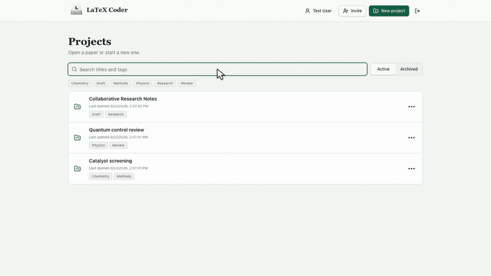

01
Source and PDF, side by side
Resize the workspace, navigate included files, and move between source and the compiled paper with SyncTeX.
- Project-wide file tree and tabs
- Bidirectional source/PDF navigation
- First-fatal-error Log workflow
